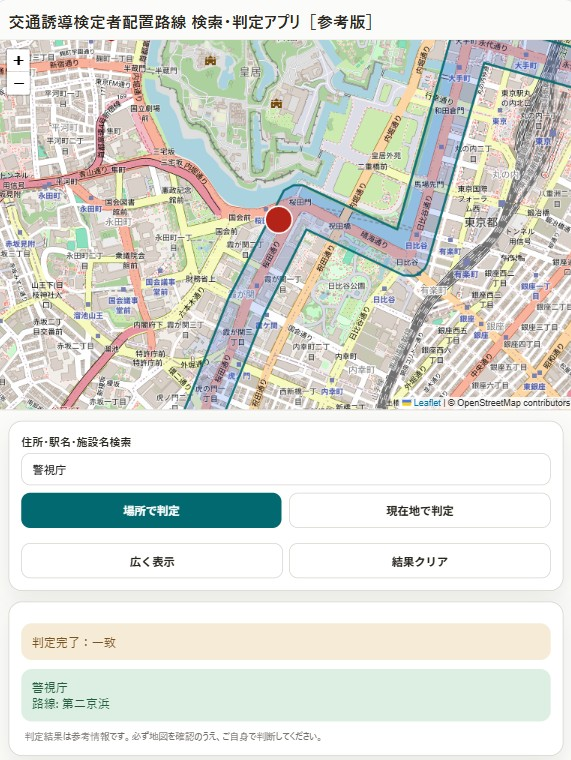

判定画面のイメージ
地図表示、住所・施設名検索、判定結果の確認ができる参考画面です。初めて利用する方でも、どのような流れで確認できるかをイメージしやすくなります。

実際の判定ページでは、住所・施設名・道路名などをもとに対象候補を参考確認できます。
交通誘導員の検定配置路線とは
交通誘導員の検定配置路線とは、交通誘導警備業務を行う際に、検定合格警備員の配置判断に関わる路線のことです。 実際の配置判断では、都道府県ごとの指定路線や最新の関係資料を確認する必要があります。
この案内ページでは、住所、施設名、道路名、交差点名などから、対象となる可能性を参考的に絞り込むための入口情報を掲載しています。 最終的な判断を行う前には、必ず最新の資料や運用情報を別途確認してください。
このページでできること
交通誘導員の検定配置路線について、住所、キーワード、施設名などをもとに、対象となる可能性を参考判定できます。
現地確認や資料確認の前段階として、対象候補を絞り込みたいときの入口として利用できます。
対象地域
対象地域は全国を想定しています。
ただし、現在は一部の地域が未対応です。対応状況は今後、順次見直しや追加を行う予定です。
使い方
- 住所、キーワード、または施設名を入力します。
- 必要な条件を入力または選択します。
- 判定を実行し、参考結果を確認します。
初めて利用する方でも、できるだけ分かりやすく操作できるよう構成しています。
入力例
- 住所で調べる例: 東京都新宿区西新宿2-8-1
- 施設名で調べる例: ○○駅前、△△市役所、□□インターチェンジ付近
- キーワードで調べる例: 国道16号、県道○号、○○交差点、○○バイパス
住所が分かる場合は住所から、分からない場合は施設名や道路名、交差点名などから入力すると確認しやすくなります。
よくある質問
検定配置路線とは何ですか？
検定配置路線とは、交通誘導員の配置判断を行う際に確認対象となる路線のことです。 このページでは、住所、地名、施設名、キーワードなどから、対象となる可能性を参考的に確認できます。
このページの判定結果だけで最終判断できますか？
いいえ。このページおよび判定機能は参考用です。 実際の配置判断、提出資料への反映、現場運用の最終判断を行う場合は、関係資料や最新情報を別途確認してください。
住所が分からない場合でも使えますか？
はい。住所が不明な場合でも、施設名、地名、交差点名、道路名などのキーワードから参考確認できる場合があります。 まずは分かる範囲の情報を入力し、候補を絞り込む入口として利用してください。
ご利用上の注意
このページおよび判定機能は参考版です。表示される内容は、最終的な法的判断や実務判断を直接保証するものではありません。
実際の配置判断、運用判断、提出資料への反映などを行う場合は、必ず別途確認を行ってください。
判定を始める
住所・施設名・道路名などから確認したい場合は、次の判定ページから利用してください。